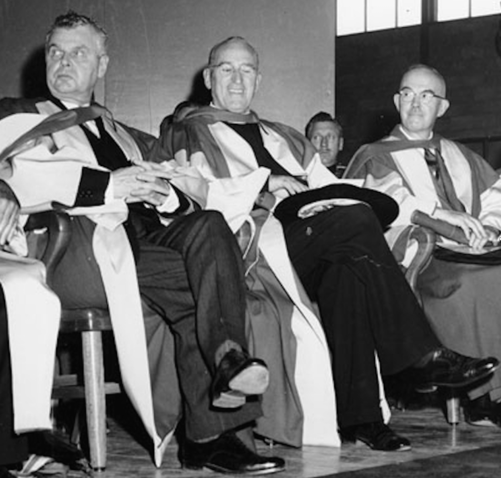

-1-MasterItem.svg)
Stories of Westminster United Church & its People / Page
96
of religion in the Soviet Union.” Later in the article Bonnell-as spokesman for the group- was quoted
as saying “there is a definite relaxation of militant attacks on religion.” Whatever other atrocities the
Communist government was visiting on its citizens Bonnell noted that at the time
of his visit there
were still twenty to forty million members of the Russian Orthodox Church in
Russia. “On Sunday, in
Moscow, the churches are filled to the doors, and between ten and 12 thousand
attend services at the
central cathedral.”
In Conclusion
In October of 1958 Bonnell, (and John Diefenbaker)
was awarded an honorary degree, Doctor of Laws.
The citation that day follows:
Few present will not have heard the voice of the Rev. Dr. John
Sutherland Bonnell, Pastor of Fifth Avenue Presbyterian Church,
New York City. Reaching out from pulpit, microphone, and platform,
his words have brought comfort and inspiration to millions
of souls among his many millions of listeners.
This Maritime lad had watched in his earthly parent the tranquilizing touch, the
healing accents,
which he knew then to be the gift of his Heavenly Father. His own native
talents, tutored in the
schools of peace and the sterner seminary of war, he proceeded so to burnish in
his two Canadian
ministries that he was called to one of the famous pulpits of the United States.
A pastorate there
of twenty-three years — the second longest in its history — has revealed those talents in all their
beneficent variety: a keen intellect, a helping hand to the less gifted, a flair
for finance (he can ask,
it is said, his thousands and collect his ten thousands), a compelling sermon in
the glowing
tradition of Wesley and Spurgeon, Drummond, Parker and Fosdick.
Yet, great Divine though he is, and though he speaks with the tongue of men and
of angels
(assent he may to the former even if modesty compel him to disclaim the latter),
he has cast
out more devils by curbing that silver organ than by giving it rein. To the
benign stillness of his
Table
of Contents
Rev. John Sutherland Bonnell
